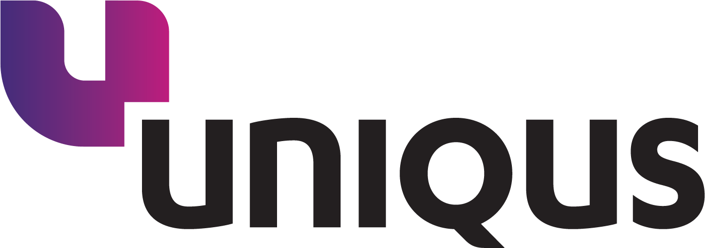

1 · The Solution
Apply the rule — formula, rate, conditions — to every transaction across lending, cards, trade finance, treasury, transaction banking.
Read GL and source systems. Every gap is an exception, with full lineage.
Each exception goes to the process owner with a plain-English narrative. Tracked end-to-end to the audit head.
2 · How It Works
Real-time analysis cards on the dashboard: "Cards exceptions up 40% — driven by new annual fee not yet repriced."
Groups hundreds of raw exceptions into a handful of root-cause clusters by pattern, product, and timing.
Ranks clusters by financial materiality. Drafts the plain-English explanation for each in the auditor's voice.
"Show me all Trade Finance exceptions over ₹50L in March." "Why is the Cards backlog growing?" Natural-language access.
Retrieves prior rulings on similar exceptions. "This waiver was disputed in Q2 — here's how it was resolved."
Auto-generates the monthly executive RA report with citations to the underlying exceptions and resolutions.
Drafts the charge type / process owner email in the bank's template. Tracks SLA. Follows up. Escalates the stale ones to managers.
Detects new product codes in transactions with no matching rule. Reads the product circular, suggests rule logic for review.
3 · Implementation Plan
4 · Internal Audit Flow
Solution Architecture
7 · Licensing Cost
| Component | Phase 1 | Phase 2 | Phase 3 |
|---|---|---|---|
| LLM — heavy reasoning | $300 – 500 | $2K – 4K | $6K – 11K |
| LLM — light + embeddings | $50 – 100 | $500 – 1K | $2K – 4K |
| Agent orchestration | OSS (LangGraph) | OSS | Bedrock / Foundry $1.5K – 3K |
| Knowledge graph + RAG | Neo4j Community + pgvector $80 – 150 | AuraDB Pro $400 – 800 | Business Critical + Pinecone $5K – 12K |
| Workflow / dashboard | OSS, single VM $0 | Managed Postgres + UI $400 – 800 | Camunda + cockpit hosting $1.5K – 3K |
| Observability + guardrails | Langfuse OSS $50 – 150 | Langfuse + Lakera $500 – 1K | Arize · Datadog · Lakera $2K – 5K |
| Cloud / infra | 1 mid-size VM $300 – 600 | Multi-VM + HA $2K – 5K | Multi-AZ DR, monitoring $8K – 18K |
| Auth / SSO | Keycloak $0 | Keycloak / Okta starter $200 – 500 | Okta · Azure AD $800 – 2K |
| Premium support | — | Best-effort | Vendor 24×7 $2.5K – 5K |
| Contingency / buffer | +25% | +20% | +15% |
6 · User Journey
8 · The Build Plan
5 · Technical Architecture
| Layer | Purpose | MVP option | Enterprise option |
|---|---|---|---|
| Data Sources | Core banking, lending, treasury, GL | Read-only access to existing ODS / warehouse | Same — direct read on bank perimeter |
| Data Plane | Where rules run, exceptions land | Existing warehouse · Postgres for app data | Snowflake · Databricks · Hadoop / Hive |
| Knowledge | Charge-type graph + Policy RAG store | Neo4j Community · pgvector | Neo4j AuraDB · Pinecone Enterprise |
| Agent Runtime | 8 agents · LLM gateway · tool use | Sonnet 4.6 + Haiku 4.5 via API · LangGraph | Opus 4.7 on Bedrock / Azure · Bedrock Agents |
| Governance | Guardrails, audit log, evaluator | Llama Guard + Presidio · Langfuse self-host | Lakera Guard / NeMo · Arize / Datadog LLM |
| Experience | Dashboard, chat, workflow, SSO | FastAPI + React + Keycloak (OSS) | ServiceNow / Camunda · Okta / Azure AD |